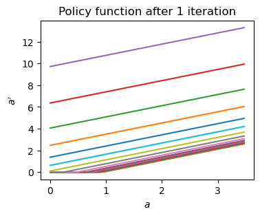
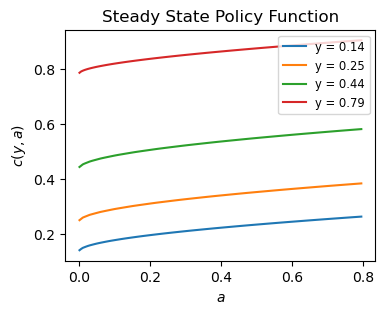

Endogeneous Grid Method#
In this notebook we discuss how to solve the household problem a la Aiyagari–this is the main building block of most HANK models–with fast, optimized methods. The main reference for this notebook is Matt Rognlie’s code on which you can find in his repository (2024). The endogenous grid method was introduced by Carroll (2006).
1. Incomplete Markets Model#
The standard incomplete markets model features the following timing:
- begin of period with asset returns (1+r)a and stochastic income y.
- allocate to assets tomorrow a' and consumption today c
- all subject to a borrowing constraint a\geq \underline a and no ability to insure against idiosyncratic shocks:
We model the income process as an AR(1), so $$ y_t = \rho y_{t-1} + e_t.$$ Since we would like to solve the whole model on a finite grid \mathcal{Y} \times \mathcal{A} with indices (i_y, i_a), we need to discretize the income and the asset space. We already have functions to do this, applying the double-exponential grid space for assets, and the Rouwenhorst AR(1) process.
import numpy as np
import matplotlib.pyplot as plt
# some useful plot defaults$
plt.rcParams.update({'font.size' : 10, 'lines.linewidth' : 1.5, 'figure.figsize' : (4,3)})
Exercise: Write and import a class called Grids which if supplied the correct parameters outputs asset and income grids, as well as transition matrix and steady state for income.
Solution: A script containing this and other classes (to be defined later in this document) can be found on my github. A non-maintained version is at the bottom of this notebook.
from utils_simm import Grid
Grids = Grid(n_y = 10, rho = 0.975, sd_log_y = 0.7, n_a = 100, min_a = 0, max_a = 10_000)
the steady state is unique.
2. Backwards Iteration to Obtain Policy Functions#
It is more efficient and accurate to use envelope condition and FOC to iterate on marginal value function V_a instead of finding the value function itself. We do backwards iteration in time. Let a_t'(y_t, a_t) be the policy function for next-period asset holdings. Assume that u(c) = \frac{c^{1-\sigma}}{1-\sigma}, where \sigma is the elasiticity of intertemporal substitution (eis).
For backward iteration, we use the Envelope condition, $$ V_{a,t}(e, a) = (1+r_t)u’(c_t(e, a))$$
and the First-Order Condition (inequality binds if borrowing limit binds)
repeatedly:
[Algorithm: Backward iteration in time]
Start at t = T, initialize V_{a, T} = 1. For t< T: 1. Use V_{a, t+1} to calculate RHS of FOC 2. Solve for today’s policies a_t'(y, a), c_t(y, a) 3. Using envelope condition, obtain marginal value function of today V_{a, t}
We go through the steps in detail.
Step 1 - Initialize, Set up Grids and Parameters#
model_params = {
'beta' : 0.95,
'r' : 0.03,
'eis' : 1.5,
'rho' : 0.975,
'sd_log_y' : 0.7
}
Grids = Grid(n_y = 15, rho = model_params['rho'], sd_log_y = model_params['sd_log_y'], n_a = 100, min_a = 0, max_a = 10_000)
the steady state is unique.
# initial Va
Va = np.ones((Grids.n_y, Grids.n_a))
W = model_params['beta'] * Grids.Pi @ Va
Step 2 - Obtain a^\prime_{t}, W_{t}#
We now write policy functions, marginal value function and associated objects as functions on the grid indices i_y and i_a whenever useful. We would like to solve for consumption policy using the FOC (assuming the constraint is slack) $$ u’(c_t) = W_{a,t}(y, a’) \Rightarrow c_t = \left( W_{a,t}(y, a’) \right)^{-1/\sigma}$$ for each possible future asset level a'. Then we use the envelope condition and can obtain V_t(y, a), where a solves a' = (1+r)a + y - c_t(y, a').
Problem: The implied a may not lie on the grid. Generally, we want V_{t, a}(y, a) for fixed values of a on the grid, not V_{t, a}(y, a(a')), where a(a') depends on the values of a'\in \mathcal{A}.
Simple solution: For each fixed level of y…
- Obtain the points c_t(y, a), store in
c_endog[i_y, :](these are also called ‘endogeneous grid points’) - Compute (1+r)^{-1} (a' + c_t(y, a') - y) = a, and save the a vector as
a_endog[i_y,:]. We now have essentially a function a(y, a') - To invert for the policy function, a'(y, a), use linear interpolation evaluated at \mathcal{A}:
np.interpolate(grid_a, a_endog[i_y,:], grid_a) - Enforce the borrowing constraint by
a_prime = np.maximum(a_prime, Grids.grid_a[0])
There is a slightly more efficient version of this algorithm using cash-on-hand. See Rognlie (2024).
c_endog = W ** (-1/model_params['eis'])
a_endog = (1 + model_params['r'])**(-1) * (Grids.grid_a[np.newaxis, :] - Grids.grid_y[:, np.newaxis] + c_endog)
a_prime = np.empty((Grids.n_y, Grids.n_a))
for i_y in range(Grids.n_y):
a_prime[i_y, :] = np.interp(Grids.grid_a, a_endog[i_y, :], Grids.grid_a)
#a_prime = np.maximum(a_prime, Grids.grid_a[0]) # enforce borrowing constraint. actually not needed because interp already does this
# obtain the consumption policy
c = (1 + model_params['r']) * (Grids.grid_a[np.newaxis, :] + Grids.grid_y[:, np.newaxis]) - a_prime
We can look at the policy function after one iteration:
# plot policy function
fig, ax = plt.subplots()
for i_y in range(Grids.n_y):
ax.plot(Grids.grid_a[0:40], a_prime[i_y, 0:40], label = f'y = {Grids.grid_y[i_y]:.2f}')
ax.set(xlabel = r'$a$', ylabel = r'$a^{\prime}$', title = 'Policy function after 1 iteration')
plt.show()

Step 3 - Obtain V_{t, a}#
V_a = (1 + model_params['r']) * c **(-1/model_params['eis']) # update value function derivative
Combine Steps into single Backward Iteration#
Now we write a function which takes as input a marginal value function, income and asset grids, preference parameters and transition matrices to compute a single backward iteration and output objects V_a, a, c.
def backward_iteration(V_a, beta, eis, r, grid_a, grid_y, Pi):
n_y, n_a = grid_y.size, grid_a.size
W = beta * Pi @ V_a
c_endog = W ** (-1/eis)
a_endog = (1 + r)**(-1) * (grid_a[np.newaxis, :] - grid_y[:, np.newaxis] + c_endog)
a_prime = np.empty((n_y, n_a))
for i_y in range(Grids.n_y):
a_prime[i_y, :] = np.interp(grid_a, a_endog[i_y, :], grid_a)
#a_prime = np.maximum(a_prime, Grids.grid_a[0]) # enforce borrowing constraint. actually not needed because interp already does this
# obtain the consumption policy
c = (1 + r) * (grid_a[np.newaxis, :] + grid_y[:, np.newaxis]) - a_prime
return c, a_prime
# test the function
c, a_prime = backward_iteration(V_a, model_params['beta'], model_params['eis'], model_params['r'], Grids.grid_a, Grids.grid_y, Grids.Pi)
And we can solve the entire household problem for steady-state policies.
grid_params = {
'n_y' : 7,
'n_a' : 500,
'min_a' : 0,
'max_a' : 10_000
}
model_params = {
'beta' : 1-0.08/4, # quarterly discount factor
'r' : 0.01/4, # quarterly interest rate
'eis' : 1,
'rho' : 0.975,
'sd_log_y' : 0.7
}
class SteadyStateHH:
def __init__(self, model_params, grid_params, tol = 1e-6, max_iter = 1_000):
self.model_params = model_params
self.grid_params = grid_params
self.Grids = Grid(n_y = grid_params['n_y'], rho = model_params['rho'], sd_log_y = model_params['sd_log_y'], n_a = grid_params['n_a'], min_a = grid_params['min_a'], max_a = grid_params['max_a'])
self.tol = tol
self.max_iter = max_iter
self.c = None
self.a_prime = None
self.V_a = None
def backward_iteration(self, V_a):
W = self.model_params['beta'] * self.Grids.Pi @ V_a
c_endog = W ** (-1/self.model_params['eis'])
a_endog = (1 + self.model_params['r'])**(-1) * (self.Grids.grid_a[np.newaxis, :] - self.Grids.grid_y[:, np.newaxis] + c_endog)
a_prime = np.empty((self.grid_params['n_y'], self.grid_params['n_a']))
for i_y in range(self.grid_params['n_y']):
a_prime[i_y, :] = np.interp(self.Grids.grid_a, a_endog[i_y, :], self.Grids.grid_a)
#a_prime = np.maximum(a_prime, self.Grids.grid_a[0])
# obtain the consumption policy
c = (1 + self.model_params['r']) * (self.Grids.grid_a[np.newaxis, :] + self.Grids.grid_y[:, np.newaxis]) - a_prime
return c, a_prime
def solve_ss(self):
# initialize value function derivative with guess
if self.V_a is None:
V_a = np.ones((self.grid_params['n_y'], self.grid_params['n_a']))
else:
V_a = self.V_a
for i in range(self.max_iter):
c, a_prime = self.backward_iteration(V_a)
V_a_new = (1 + self.model_params['r']) * c **(-1/self.model_params['eis'])
if np.max(np.abs(V_a_new - V_a)) < self.tol:
break
V_a = V_a_new
self.c = c
self.a_prime = a_prime
self.V_a = V_a
return c, a_prime
def plot_policy(self, bound_grid = 0.4):
"""
Plot the policy function for the first 4 income states
bound_grid: float, fraction of the grid to plot
"""
rng_asset_grid = int(grid_params['n_a']*bound_grid)
fig, ax = plt.subplots()
for i_y, y in enumerate(self.Grids.grid_y[0:4]):
ax.plot(self.Grids.grid_a[0:rng_asset_grid], self.c[i_y, 0:rng_asset_grid], label = f'y = {y:.2f}')
ax.set(xlabel = r'$a$', ylabel = r'$c(y,a)$', title = 'Steady State Policy Function')
plt.legend(fontsize = 'small')
plt.show()
ss = SteadyStateHH(model_params, grid_params)
ss.solve_ss()
ss.c, ss.a_prime
ss.plot_policy(0.2)
the steady state is unique.

Exercise: Refactor the code in order to use @njit.
from numba import njit
@njit
def backward_iteration(V_a, beta, eis, r, grid_a, grid_y, Pi):
W = beta * Pi @ V_a
c_endog = W ** (-1/eis)
a_endog = (1 + r)**(-1) * (grid_a[np.newaxis, :] - grid_y[:, np.newaxis] + c_endog)
a_prime = np.empty((grid_y.shape[0], grid_a.shape[0]))
for i_y in range(grid_y.shape[0]):
a_prime[i_y, :] = np.interp(grid_a, a_endog[i_y, :], grid_a)
c = (1 + r) * (grid_a[np.newaxis, :] + grid_y[:, np.newaxis]) - a_prime
return c, a_prime
class SteadyStateHH:
def __init__(self, model_params, grid_params, tol = 1e-6, max_iter = 1_000):
self.model_params = model_params
self.grid_params = grid_params
self.Grids = Grid(n_y = grid_params['n_y'], rho = model_params['rho'], sd_log_y = model_params['sd_log_y'], n_a = grid_params['n_a'], min_a = grid_params['min_a'], max_a = grid_params['max_a'])
self.tol = tol
self.max_iter = max_iter
self.c = None
self.a_prime = None
self.V_a = None
# adding the model_params as an argument allows solving for different parameterizations
def solve_ss(self, model_params):
# update grid if necessary
if (self.model_params['rho'], self.model_params['sd_log_y']) != (model_params['rho'], model_params['sd_log_y']):
self.Grids = Grid(n_y = self.grid_params['n_y'], rho = model_params['rho'], sd_log_y = model_params['sd_log_y'], n_a = self.grid_params['n_a'], min_a = self.grid_params['min_a'], max_a = self.grid_params['max_a'])
# update model_params if necessary
if self.model_params != model_params:
self.model_params = model_params
# initialize value function derivative with guess
if self.V_a is None:
V_a = np.ones((self.grid_params['n_y'], self.grid_params['n_a']))
else:
V_a = self.V_a
for i in range(self.max_iter):
c, a_prime = backward_iteration(V_a, model_params['beta'], model_params['eis'], model_params['r'], self.Grids.grid_a, self.Grids.grid_y, self.Grids.Pi)
V_a_new = (1 + model_params['r']) * c **(-1/model_params['eis'])
if np.max(np.abs(V_a_new - V_a)) < self.tol:
break
V_a = V_a_new
self.c = c
self.a_prime = a_prime
self.V_a = V_a
return c, a_prime
def plot_policy(self, bound_grid = 0.4):
"""
Plot the policy function for the first 4 income states
bound_grid: float, fraction of the grid to plot
"""
rng_asset_grid = int(grid_params['n_a']*bound_grid)
fig, ax = plt.subplots()
for i_y, y in enumerate(self.Grids.grid_y[0:4]):
ax.plot(self.Grids.grid_a[0:rng_asset_grid], self.c[i_y, 0:rng_asset_grid], label = f'y = {y:.2f}')
ax.set(xlabel = r'$a$', ylabel = r'$c(y,a)$', title = 'Steady State Policy Function')
plt.legend(fontsize = 'small')
plt.show()
ss = SteadyStateHH(model_params, grid_params)
ss.solve_ss(model_params=ss.model_params)
ss.c, ss.a_prime
ss.plot_policy(0.2)
the steady state is unique.
ss = SteadyStateHH(model_params, grid_params)
ss.solve_ss(model_params=ss.model_params)
the steady state is unique.
(array([[1.41722822e-01, 1.46412415e-01, 1.50292317e-01, ...,
1.86182818e+02, 1.94981292e+02, 2.04215800e+02],
[2.50991933e-01, 2.55681526e-01, 2.60415096e-01, ...,
1.86403939e+02, 1.95202357e+02, 2.04436700e+02],
[4.44508157e-01, 4.49197750e-01, 4.53931320e-01, ...,
1.86684758e+02, 1.95483026e+02, 2.04717044e+02],
...,
[1.34562866e+00, 1.34617631e+00, 1.34672238e+00, ...,
1.87539703e+02, 1.96337168e+02, 2.05569687e+02],
[2.11335992e+00, 2.11362938e+00, 2.11390126e+00, ...,
1.88211194e+02, 1.97007799e+02, 2.06238802e+02],
[3.17854812e+00, 3.17874042e+00, 3.17893450e+00, ...,
1.89156862e+02, 1.97952041e+02, 2.07180594e+02]]),
array([[0.00000000e+00, 0.00000000e+00, 8.53668052e-04, ...,
8.93360537e+03, 9.36572181e+03, 9.82092592e+03],
[0.00000000e+00, 0.00000000e+00, 0.00000000e+00, ...,
8.93349352e+03, 9.36561001e+03, 9.82081429e+03],
[0.00000000e+00, 0.00000000e+00, 0.00000000e+00, ...,
8.93340622e+03, 9.36552286e+03, 9.82072746e+03],
...,
[4.85540026e-02, 5.26959516e-02, 5.68834457e-02, ...,
8.93350095e+03, 9.36561839e+03, 9.82082450e+03],
[3.55745601e-01, 3.60165727e-01, 3.64627417e-01, ...,
8.93390438e+03, 9.36602268e+03, 9.82123030e+03],
[1.19425196e+00, 1.19874925e+00, 1.20328874e+00, ...,
8.93486241e+03, 9.36698214e+03, 9.82219221e+03]]))
3. Forward Iteration to Obtain Distribution#
With steady-state policies at hand, we can compute the distribution of next-period asset holdings, D_{t+1}(y, a) given the current distribution D_t. Assume for a moment that a' maps assets on the grid \mathcal A. Then
Problem: a'(e, a) does not map into \mathcal A. Possible solution: Lotteries.
Basic idea is that if a'(e, a) = a' \in [a_i, a_{i+1}] for two consecutive grid points a_i, a_{i+1}, then a fraction q(y, a) = \frac{a_{i+1} - a'}{a_{i+1} - a_{i}} of the population lands on the lower gridpoint.
Let a^+ be the next highest grid point on the asset grid, and a^- the next lowest.
We can pre-compute the lottery array \mu to handle the forward iteration. Still, this approach is very inefficient.
Exercise: Explain what is so inefficient about our approach?
Exercise: Write a function to compute mu
# Inefficient way to compute lotteries
@njit
def get_mu(policy, grid_a, grid_y):
assert (policy - grid_a.max()).max() <= 0 and (policy - grid_a.min()).min() >= 0 # make sure policy is within bounds of grid_a
n_a = np.shape(grid_a)[0]
n_y = np.shape(grid_y)[0]
mu = np.zeros((n_y, n_a, n_a), dtype=np.float64)
for index_a in range(len(grid_a)):
for index_a_bar in range(len(grid_a)):
for index_y_bar in range(len(grid_y)):
if (grid_a[index_a] >= policy[index_y_bar, index_a_bar]) and (grid_a[index_a - 1] <= policy[index_y_bar, index_a_bar]) :
p_plus = (policy[index_y_bar, index_a_bar] - grid_a[index_a - 1]) / (grid_a[index_a] - grid_a[index_a-1])
mu[index_y_bar, index_a_bar, index_a] += p_plus
continue
if (grid_a[index_a] <= policy[index_y_bar, index_a_bar]) and (grid_a[index_a + 1] >= policy[index_y_bar, index_a_bar]) :
p_minus = (grid_a[index_a + 1] - policy[index_y_bar, index_a_bar]) / (grid_a[index_a+1] - grid_a[index_a])
mu[index_y_bar, index_a_bar, index_a] += p_minus
continue
return mu
mu = get_mu(ss.a_prime, ss.Grids.grid_a, ss.Grids.grid_y)
%timeit get_mu(ss.a_prime, ss.Grids.grid_a, ss.Grids.grid_y)
1.86 ms ± 27.2 µs per loop (mean ± std. dev. of 7 runs, 1,000 loops each)
Instead, consider where the mass of D_t(y, a) is sent to. For y fixed, D_t(y, a) \dfrac{a'(y, a) - a'(y, a)^-}{a'(y, a)^+ - a'(y, a)^-} = D_t(y, a) q(y, a) is sent to a'(y, a)^+ and D_t(y, a) (1-q(y, a)) is sent to a'(y, a)^-. Proceeding over all (y, a), we obtain \tilde D_t(\cdot, \cdot), the distribution after asset choices were made and before income shocks realized.
We now write a function to obtain the q (the lotteries) and the indices of a'(y, a)^+, where the masses in the distribution are sent to. Once we got q and indexes, we can use these objects in every forward iteration on D_t.
def get_lotteries(policy, grid_a):
indexes = np.searchsorted(grid_a, policy) # indexes corresponding to a'(y, a)+ (function returns i with a[i-1] < v <= a[i])
q = (policy - grid_a[indexes - 1]) / (grid_a[indexes] - grid_a[indexes - 1]) # lotteries
return indexes, q
# forward iteration
@njit
def forward_iteration(indexes, q, Pi, D):
n_y, n_a = D.shape
D_new = np.zeros((n_y, n_a))
for y in range(n_y):
for a in range(n_a):
D_new[y, indexes[y, a]] += q[y, a] * D[y, a]
D_new[y, indexes[y, a]-1] += (1 - q[y, a]) * D[y, a]
# D_new is D_tilde right now. Now we need to update D_tilde using Pi
D_new = Pi @ D_new
return D_new
Note that, when calculating D_new = Pi @ D_new, row i_y corresponding to state y will hold the vector
Finally, we compute the steady state distribution by iterating until convergence:
def distribution_ss(Pi, policy, grid_a, maxiter=10_000, tol=1E-10, verbose=False):
indexes, q = get_lotteries(policy, grid_a)
# initialize distribution
D = np.ones_like(policy)/np.size(policy)
count, error = 0, 1
while error > tol and count < maxiter:
D_new = forward_iteration(indexes, q, Pi, D)
error = np.max(np.abs(D - D_new))
D = D_new.copy()
count += 1
if verbose :
print("max |D_t - D_t+1| = ", error, "\nnum iterations:", count)
return D
D_ss = distribution_ss(ss.Grids.Pi, ss.a_prime, ss.Grids.grid_a, maxiter=1000, tol=1E-10, verbose=True)
# check how long it takes
%time distribution_ss(ss.Grids.Pi, ss.a_prime, ss.Grids.grid_a, maxiter=1000, tol=1E-10, verbose=True)
max |D_t - D_t+1| = 9.662340372251776e-11
num iterations: 536
max |D_t - D_t+1| = 9.662340372251776e-11
num iterations: 536
CPU times: user 7.77 ms, sys: 33 µs, total: 7.8 ms
Wall time: 7.72 ms
array([[1.40918274e-001, 1.12836882e-004, 7.66408375e-005, ...,
4.63400194e-114, 6.22448773e-116, 4.23457364e-118],
[1.38212429e-001, 2.53033570e-004, 1.90803709e-004, ...,
4.61175517e-114, 6.19620063e-116, 4.21646007e-118],
[1.29247539e-001, 6.69139940e-004, 5.20800102e-004, ...,
4.61134519e-114, 6.19614397e-116, 4.21685452e-118],
...,
[4.76938191e-003, 8.11450720e-005, 5.90862252e-005, ...,
4.73711752e-114, 6.35938753e-116, 4.32452420e-118],
[1.49636758e-004, 2.56112858e-006, 1.86456018e-006, ...,
4.92295035e-114, 6.59920835e-116, 4.48156752e-118],
[3.77194925e-006, 6.47532936e-008, 4.71375717e-008, ...,
5.27257915e-114, 7.04886178e-116, 4.77491899e-118]])
Using the SteadyStateHH Module#
Exercise: Add the computation of steady state D to the SteadyStateHH class. Import it from another file and run it.
Note: restart the kernel before re-importing the classes.
from utils_simm import *
grid_params = {
'n_y' : 7,
'n_a' : 500,
'min_a' : 0,
'max_a' : 10_000
}
model_params = {
'beta' : 1-0.08/4, # quarterly discount factor
'r' : 0.01/4, # quarterly interest rate
'eis' : 1,
'rho' : 0.975,
'sd_log_y' : 0.7
}
print(model_params, "\n",grid_params, sep="")
# create steady state object
ss = SteadyStateHH(model_params, grid_params)
{'beta': 0.98, 'r': 0.0025, 'eis': 1, 'rho': 0.975, 'sd_log_y': 0.7}
{'n_y': 7, 'n_a': 500, 'min_a': 0, 'max_a': 10000}
the steady state is unique.
# solve for steady state
ss.solve_ss(ss.model_params)
ss.distribution_ss()
array([[1.40918274e-001, 1.12836882e-004, 7.66408375e-005, ...,
4.63400194e-114, 6.22448773e-116, 4.23457364e-118],
[1.38212429e-001, 2.53033570e-004, 1.90803709e-004, ...,
4.61175517e-114, 6.19620063e-116, 4.21646007e-118],
[1.29247539e-001, 6.69139940e-004, 5.20800102e-004, ...,
4.61134519e-114, 6.19614397e-116, 4.21685452e-118],
...,
[4.76938191e-003, 8.11450720e-005, 5.90862252e-005, ...,
4.73711752e-114, 6.35938753e-116, 4.32452420e-118],
[1.49636758e-004, 2.56112858e-006, 1.86456018e-006, ...,
4.92295035e-114, 6.59920835e-116, 4.48156752e-118],
[3.77194925e-006, 6.47532936e-008, 4.71375717e-008, ...,
5.27257915e-114, 7.04886178e-116, 4.77491899e-118]])
The result: utils_simm.py#
For reference, here is the code for the standard incomplete markets module which we have developed in this notebook.
import numpy as np
class Grid:
def __init__(self, n_y, rho, sd_log_y, n_a, min_a, max_a):
self.n_y = n_y
self.rho = rho
self.sd_log_y = sd_log_y
self.n_a = n_a
self.min_a = min_a
self.max_a = max_a
self.Pi, self.grid_y = self.rouwenhorst(n_y, rho, sd_log_y)
self.pi_ss = self.stationary_dist(self.Pi)[0,:]
self.grid_y = self.normalize_y(self.grid_y, self.pi_ss)
self.grid_a = self.discretize_assets(min_a, max_a, n_a)
# sigma is the sd of the error, e_t
def rouwenhorst(self, n, rho, sd_log_y):
# the grid
e = np.arange(n) # sd of e on this grid with Pi is sqrt(n-1)/2
e = e / ( (n-1)**0.5 /2 ) # now its unit sd
e = e * sd_log_y # now it's the sd of the cross section of log_y
# the transition matrix
p = (1+rho)/2
Pi = np.array([[p, 1-p], [1-p, p]])
while Pi.shape[0] < n:
Pi_next = np.zeros((1+Pi.shape[0], 1+Pi.shape[1]))
Pi_next[0:Pi.shape[0], 0:Pi.shape[1]] += Pi * p
Pi_next[0:Pi.shape[0], -Pi.shape[1]:] += Pi * (1-p)
Pi_next[-Pi.shape[0]:, -Pi.shape[1]:] += Pi * p
Pi_next[-Pi.shape[0]:, 0:Pi.shape[1]] += Pi * (1-p)
Pi_next[1:-1, :] /= 2
Pi = Pi_next
return Pi, e
def stationary_dist(self, Pi):
Pi_stationary = Pi.copy()
eps = 1
while eps > 10E-12:
Pi_old = Pi_stationary.copy()
Pi_stationary = Pi_stationary @ Pi_stationary
eps = np.max(np.abs(Pi_stationary - Pi_old))
if np.max(
np.abs(
np.sum(Pi_stationary - Pi_stationary,axis = 0) / Pi_stationary.shape[0]
)
) < 10E-10:
print("the steady state is unique.")
return Pi_stationary
def normalize_y(self, log_y, pi_ss): # make y have unit mean
y = np.exp(log_y)
y = y / np.vdot(y, pi_ss)
return y
# write a function which discretizes the asset space
def discretize_assets(self, amin, amax, n_a):
# find ubar
ubar = np.log(np.log(amax - amin + 1)+1)
# make linar grid for the u's
grid_u = np.linspace(0,ubar, n_a)
# transform back to a
grid_a = amin + np.exp(np.exp(grid_u)-1)-1
return grid_a
from numba import njit
@njit
def backward_iteration(V_a, beta, eis, r, grid_a, grid_y, Pi):
W = beta * Pi @ V_a
c_endog = W ** (-1/eis)
a_endog = (1 + r)**(-1) * (grid_a[np.newaxis, :] - grid_y[:, np.newaxis] + c_endog)
a_prime = np.empty((grid_y.shape[0], grid_a.shape[0]))
for i_y in range(grid_y.shape[0]):
a_prime[i_y, :] = np.interp(grid_a, a_endog[i_y, :], grid_a)
c = (1 + r) * (grid_a[np.newaxis, :] + grid_y[:, np.newaxis]) - a_prime
return c, a_prime
def get_lotteries(policy, grid_a):
indexes = np.searchsorted(grid_a, policy) # indexes corresponding to a'(y, a)+ (function returns i with a[i-1] < v <= a[i])
q = (policy - grid_a[indexes - 1]) / (grid_a[indexes] - grid_a[indexes - 1]) # lotteries
return indexes, q
# forward iteration
@njit
def forward_iteration(indexes, q, Pi, D):
n_y, n_a = D.shape
D_new = np.zeros((n_y, n_a))
for y in range(n_y):
for a in range(n_a):
D_new[y, indexes[y, a]] += q[y, a] * D[y, a]
D_new[y, indexes[y, a]-1] += (1 - q[y, a]) * D[y, a]
# D_new is D_tilde right now. Now we need to update D_tilde using Pi
D_new = Pi @ D_new
return D_new
class SteadyStateHH:
def __init__(self, model_params, grid_params, tol = 1e-6, max_iter = 1_000):
self.model_params = model_params
self.grid_params = grid_params
self.Grids = Grid(n_y = grid_params['n_y'], rho = model_params['rho'], sd_log_y = model_params['sd_log_y'], n_a = grid_params['n_a'], min_a = grid_params['min_a'], max_a = grid_params['max_a'])
self.tol = tol
self.max_iter = max_iter
self.c = None
self.a_prime = None
self.V_a = None
self.D = None
# adding the model_params as an argument allows solving for different parameterizations
def solve_ss(self, model_params):
# update grid if necessary
if (self.model_params['rho'], self.model_params['sd_log_y']) != (model_params['rho'], model_params['sd_log_y']):
self.Grids = Grid(n_y = self.grid_params['n_y'], rho = model_params['rho'], sd_log_y = model_params['sd_log_y'], n_a = self.grid_params['n_a'], min_a = self.grid_params['min_a'], max_a = self.grid_params['max_a'])
# update model_params if necessary
if self.model_params != model_params:
self.model_params = model_params
# initialize value function derivative with guess
if self.V_a is None:
V_a = np.ones((self.grid_params['n_y'], self.grid_params['n_a']))
else:
V_a = self.V_a
for i in range(self.max_iter):
c, a_prime = backward_iteration(V_a, model_params['beta'], model_params['eis'], model_params['r'], self.Grids.grid_a, self.Grids.grid_y, self.Grids.Pi)
V_a_new = (1 + model_params['r']) * c **(-1/model_params['eis'])
if np.max(np.abs(V_a_new - V_a)) < self.tol:
break
V_a = V_a_new
self.c = c
self.a_prime = a_prime
self.V_a = V_a
return c, a_prime
def distribution_ss(self, maxiter=10_000, tol=1E-10, verbose=False):
assert self.a_prime is not None, "solve_ss must be called first"
Pi = self.Grids.Pi
grid_a = self.Grids.grid_a
policy = self.a_prime
indexes, q = get_lotteries(policy, grid_a)
# initialize distribution
D = np.ones_like(policy)/np.size(policy)
count, error = 0, 1
while error > tol and count < maxiter:
D_new = forward_iteration(indexes, q, Pi, D)
error = np.max(np.abs(D - D_new))
D = D_new.copy()
count += 1
if verbose :
print("max |D_t - D_t+1| = ", error, "\nnum iterations:", count)
self.D = D
return D
def plot_policy(self, bound_grid = 0.4):
"""
Plot the policy function for the first 4 income states
bound_grid: float, fraction of the grid to plot
"""
rng_asset_grid = int(grid_params['n_a']*bound_grid)
fig, ax = plt.subplots()
for i_y, y in enumerate(self.Grids.grid_y[0:4]):
ax.plot(self.Grids.grid_a[0:rng_asset_grid], self.c[i_y, 0:rng_asset_grid], label = f'y = {y:.2f}')
ax.set(xlabel = r'$a$', ylabel = r'$c(y,a)$', title = 'Steady State Policy Function')
plt.legend(fontsize = 'small')
plt.show()